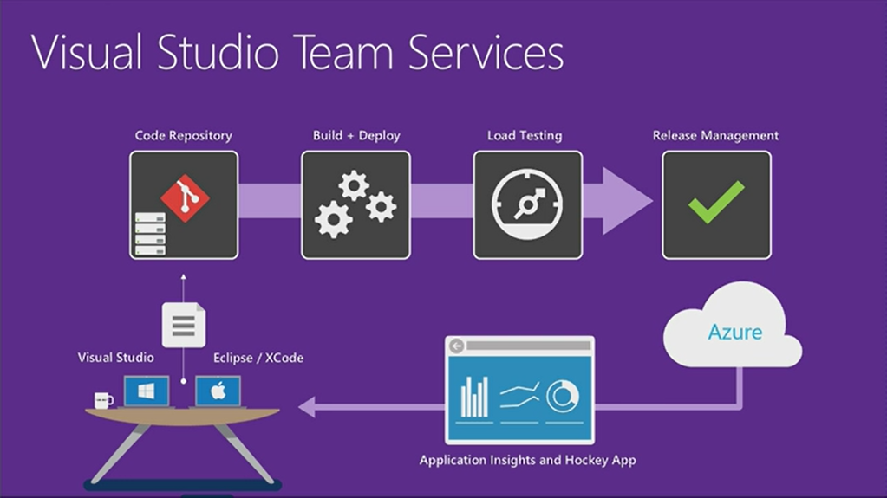

For a personal project (and to work with some new technology) I build a new ASPNET Core 1.0 website using AngularJS2. To make further development easier for myself, I wanted to enable continuous deployment, so my web application would be deployed into Azure on every checkin. Because the used technology is all relatively new, I didn’t expect it to work the first try and it took me some time to get it to work correctly. I included my errors and solutions for anyone who is doing the same and runs in the same issues. I expect most will come here by googling one of the errors ;).

My approach
I used Yeoman’s template generator-aspnetcore-spa to generate the basis of this project, you can find the how to here.1
npm install -g yo generator-aspnetcore-spa
Then I used this tutorial to deploy this aspnetcore app to azure. A quick note here, I used VSTS deployment, so the deployment is configured in VSTS, so I am not using Kudu (this makes a difference, more on this later). I hoped the deployment would be smooth, but not quite. I will discribe the issues and explain how I solved them.
Issue number 1: Web Deploy cannot modify the file ‘Client.dll’ (Using the “Deploy Website to Azure” task)
[error]Microsoft.Web.Deployment.DeploymentDetailedClientServerException: Web Deploy cannot modify the file ‘Client.dll’ on the destination because it is locked by an external process. In order to allow the publish operation to succeed, you may need to either restart your application to release the lock, or use the AppOffline rule handler for .Net applications on your next publish attempt. Learn more at: http://go.microsoft.com/fwlink/?LinkId=221672#ERROR_FILE_IN_USE.
This error is caused by the application still being active when you are deploying. The task doesn’t stop the application, which you also not always want to happen. The “old” “Deploy Website to Azure” release task works, but doesn’t include the option to take the app offline before deploying. Initially I switched to the “Deploy AzureRM Web App” release task, because this task does support that option. But because of another issue (see the next error) I decided the switch back and I solved this problem by shutting the app down, before the deploy and starting it back up after. This is no problem for my app, but this might not be ideal for every website. You can add powershell steps, so you can do whatever works in your scenario.
Issue number 2: Error: Source does not support parameter called ‘IIS Web Application Name’ with a green Build (Using the “Deploy AzureRM Web App” task)
The “Deploy AzureRM Web App” runs msdeploy under the hood to deploy to azure. I ran into 2 issues here: I got the error: “Error: Source does not support parameter called ‘IIS Web Application Name’. Must be one of ().” and given that error, the build was green.
The green build is a known issue, see here. So this should be solved soon. The other issue was trickier, I found two solutions:
- http://www.factus.dk/post/2016/07/04/Build-and-deployment-of-ASPNET-Core-10-to-Azure-App-Service
- https://github.com/Microsoft/vsts-rm-extensions/issues/51#event-698986554
Based on this information I added a parameters.xml and set.parameters.xml file to my project and configured the build to use these files. This solved this problem, but then gave me the following error:
Issue number 3: Error Code: ERROR_INSUFFICIENT_ACCESS_TO_SITE_FOLDER
More Information: Unable to perform the operation (“Create Directory”) for the specified directory (“C:\a\1\s...\src\Client\bin...\”). This can occur if the server administrator has not authorized this operation for the user credentials you are using. Learn more at: http://go.microsoft.com/fwlink/?LinkId=221672#ERROR_INSUFFICIENT_ACCESS_TO_SITE_FOLDER.
Error: The error code was 0x80070005.
Error: Access to the path ‘C:\a’ is denied.
It looks like the contentPath was not being set correctly in the msdeploy package, so I tried setting it myself through the parameter file and through commandline arguments, but in both situations without result. Because I was not sure what was happening I decided to switch back to the “Deploy Website to Azure” task, because that one worked fine. I just had to add the powershell scripts to stop and start the website.
Edit: After I finished writing this blogpost I got a possible solution to this problem on Github. After the weekend I will try this out and see if this solves my error.
Issue number 4: Exception: Call to Node module failed with error: To use prerendering, you must install the ‘aspnet-prerendering’ NPM package.
So now my application was being deployed through continuous delivery, but my website was not working yet. Locally my application ran fine, but on Azure I got the following exception:
Exception: Call to Node module failed with error: To use prerendering, you must install the ‘aspnet-prerendering’ NPM package. I temporarily changed:1
2<app asp-prerender-module="ClientApp/boot-server"
asp-prerender-webpack-config="webpack.config.js">Loading...</app>1
<app></app>
It sounds like this is a problem not related to deployment, but it turns out it actually is. The cause of this error is that the folder “node_modules” is not being deployed, and aspnetcore needs those for the server side node execution. This is because in the generator-aspnetcore-spa template a .gitignore file is added that blocks (ignores) the “node_modules” folder from being checked in. The idea behind this (I assume) is that during deployment the correct modules are downloaded and added to the website so it all works again. This has some advantages and disadvantages. I am not sure what the best way to go is, so I think I will write a blogpost about this to order my own thoughts on this. If you have ideas about this let me know in the comments.
And this also brought up another point which I didn’t realize: There is a difference between deploying from VSTS into Azure and attaching your source repository in VSTS (or other git host) to your Azure website. Deployment from VSTS is with MSBuild, deployment from Azure goes via Kudu. And deploying the same solution over MSBuild or via Kudu gives a different result. This is something to be aware of. I think I will write another blogpost with my feelings about Kudu. For the details about this issue see my github question.